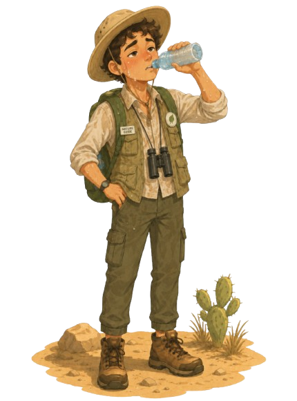
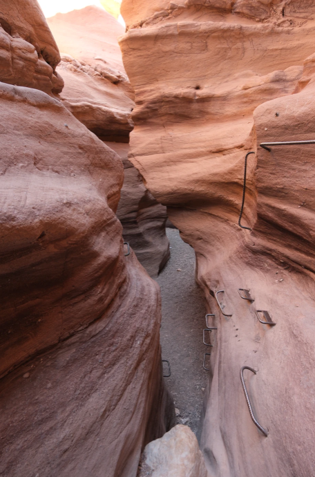
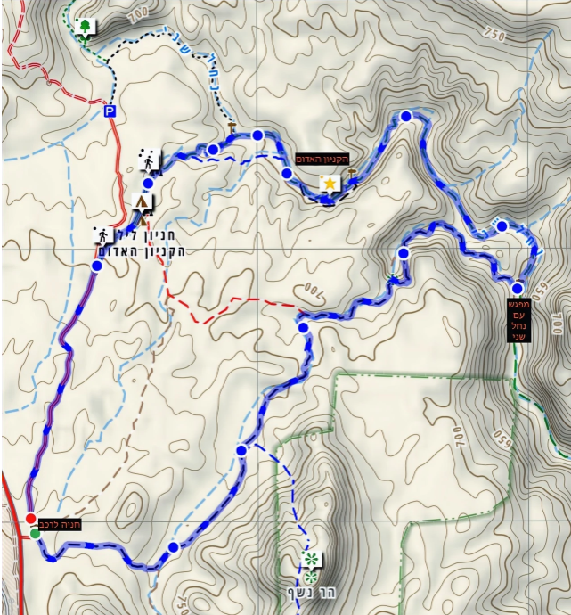

הקניון האדום

- אורך המסלול: כ-1-2 ק"מ או כ-4-5 ק"מ
- משך הטיול: כשעה עד שלוש שעות
- רמת קושי: קלה-בינונית
- אופי המסלול: מעגלי, כולל יתדות ומפלונים יבשים
- אזור: הרי אילת, סמוך לכביש 12
- מתאים ל: משפחות מיטיבות לכת וחובבי נוף מדברי
הקניון האדום נמצא באזור הרי אילת והוא אחד המסלולים היפים בדרום. המסלול עובר בין קירות אבן חול צבעוניים בגוונים של צהוב, חום ואדום. אפשר לבחור מסלול קצר בתוך הקניון בלבד, או מסלול ארוך יותר שממשיך לנחל שני.

קרדיט תמונה: panoramictales.com
הגעה ונקודת התחלה:
נוסעים על כביש 12 לכיוון הרי אילת ופונים לפי השילוט לקניון האדום.
ממשיכים בדרך עפר מסומנת עד חניון הקניון האדום, ומשם מתחילים את המסלול ברגל.
המסלול ומה רואים בדרך:
המסלול הקצר יורד אל תוך הקניון בשביל המסומן בירוק, ועובר בין קירות סלע צרים וצבעוניים.
בתוך הקניון יורדים במפלונים יבשים בעזרת מעקות ויתדות. במסלול הארוך ממשיכים לנחל שני
וחוזרים במסלול מעגלי רחב יותר. חשוב להגיע עם מים, כובע ונעלי הליכה מתאימות.

קרדיט מפה: panoramictales.com